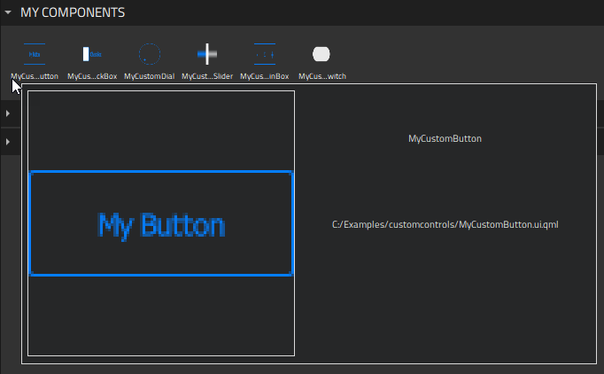
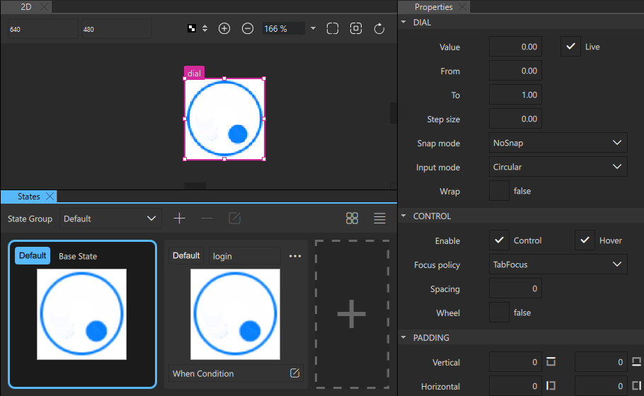
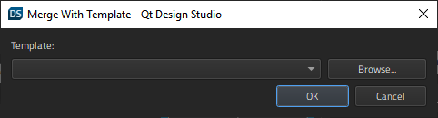

Creating Custom Components
You can either use project wizard templates to create custom components and controls or move component instances into separate files to turn them into new components that you can create instances of. You can then use the instances of the new components in other components.

Custom components are stored in Components > My Components. You can create instances of custom components by dragging-and-dropping them from Components to the 2D, 3D, or Navigator view.
Creating Components from Scratch
To use wizard templates to create custom components:
- Select File > New File > Qt Quick Files > Qt Quick UI File > Choose to create a new
.ui.qmlfile.Note: Components are listed in Components > My Components only if the filename begins with a capital letter.
- Click Design to open the file in the 2D view.
- Drag-and-drop a component from Components to Navigator or the 2D view.
- Edit component properties in the Properties view. The available properties depend on the component type. You can add properties for components on the Properties tab in the Connections view.
- To change the appearance and behavior of the component instances in ways that are not supported in Qt Design Studio by default, you can define custom properties on the Properties tab in the Connections view.
The following sections contain more information about how to use the 2D view to edit 2D content and the 3D view to edit 3D scenes, as well as examples of how to create UI controls using instances of basic components:
- The 2D View
- The 3D View
- Creating Buttons
- Creating Scalable Buttons and Borders
Naming Conventions
Establish naming conventions to keep the components in your UI organized. Name your components accurately and give them suitable IDs. Particularly, check and modify the default names of the components you export from design tools to create reliable and self-explanatory names that follow the naming conventions you have established.
For example, a button symbol might have the ID myButton_symbol and the different layers might have it as a prefix with the states appended, thus producing IDs such as myButton_symbol_default. To prepare for additional mouse areas later in the project, you could use similar IDs for them, such as myButton_symbol_hotspot. When you use the button as instances in a screen, you would give each of these instances a unique ID that relates to that screen. For example, myButton_myMenu_home, myButton_myMenu_profile, and myButton_myMenu_settings
Creating Custom Controls
You can use project wizard templates to create stylable UI controls based on the components in the Qt Quick Controls module:

You can edit the properties of the controls in all the preset states to apply your own style to them.
Note: For buttons and check boxes, you can disable the misbehaving hover effects by selecting Properties > Control, and then disabling the Hover check box.

To create stylable UI controls:
- Select File > New File > Files and Classes > Qt Quick Controls.
- Select the control to create, and then select Choose.
Note: Components are listed in Components > My Components only if the filename begins with a capital letter.
- Edit component properties in the Properties view.
The available properties depend on the component type. You can add properties for components on the Properties tab in the {Connections} view.
For an example of using the Button template to create a button and styling it, see Creating a Push Button in the Log In UI - Components tutorial.
In addition, you can create starting points for different types of screens:
Turning Component Instances into Custom Components
An alternative way of creating reusable components is to turn component instances into custom components by moving them into separate component files (.ui.qml). Right-click a component instance in Navigator or the 2D view, and select Create Component in the context menu.

Give the new component a name, and select whether properties are set for the new component or for the original one.
When you select OK, a new component file is created and an instance of the component is added to the code in the current component file. The look of your UI in the 2D view does not change.
To open the new component file for editing the properties that you want to change for all instances of the component, right-click the component, and then select Go into Component in the context menu. For additional ways of opening base components, see Moving Within Components.
For an example of creating a reusable custom component, see Progress Bar.
Custom components are listed in Components > My Components, and you can use instances of them to build more components.
Merging Files with Templates
You can merge the current component file against an existing second component file using the second file in a way similar to using a CSS stylesheet.
To use this experimental feature, right-click a component in the Navigator or 2D view and select Merge File with Template in the context menu.

In the Template field, select the file to use as a template.